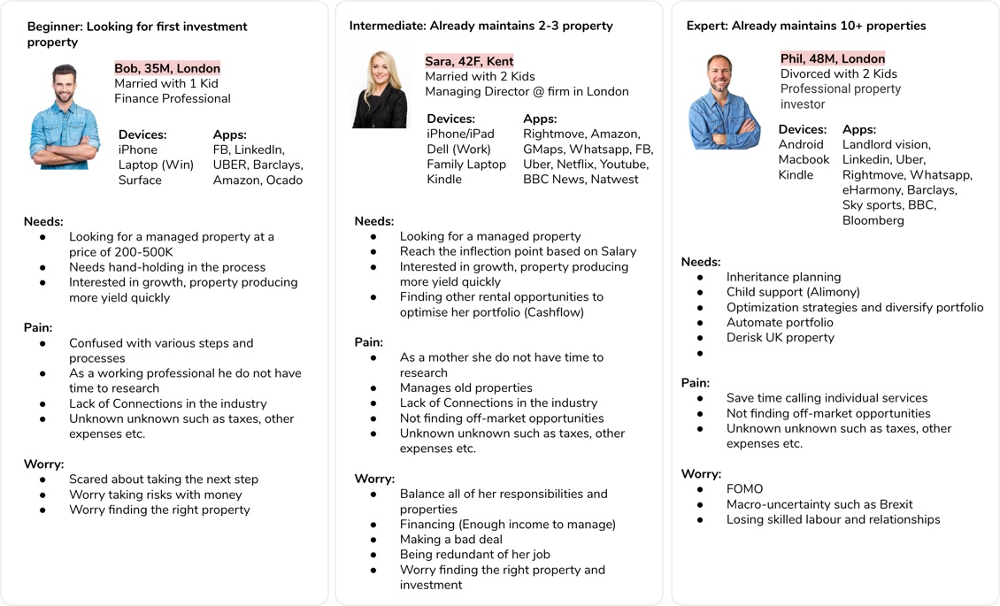
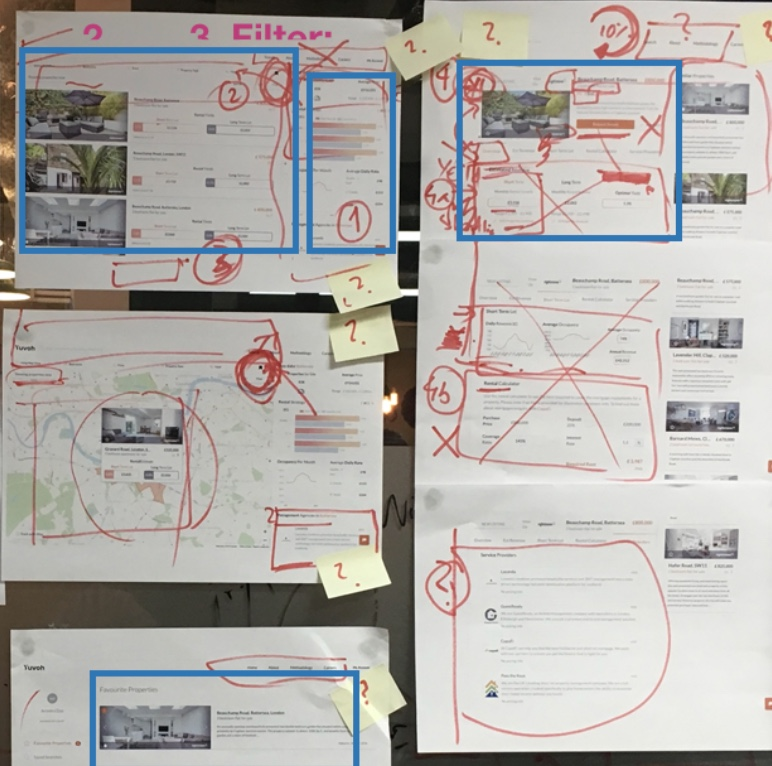
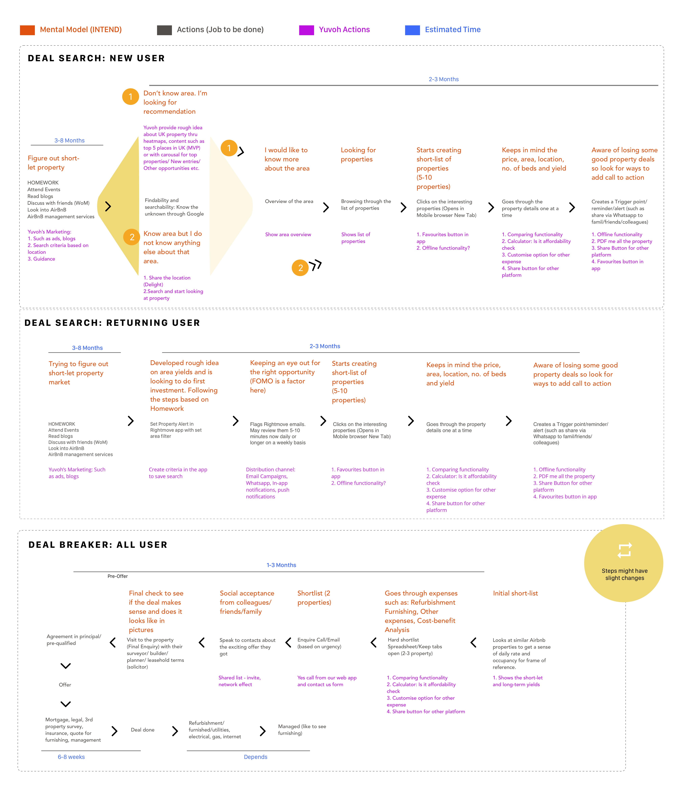

PROBLEM
Property investment market is broken. Traditional companies such as Rightmove and Zoopla are focused on residential property while do not fully cater for buy-to-let (BTL).
With the inception of companies like AirBNB, the market have seen an unprecedented growth and shift towards short-term BTL over long-term BTL due to higher rental yields. This has created new opportunity as well as uncertainity.
There is no easy way to understand the valuation and rental yield of a property and if it is fit for Short-term or Long-term investment. Investors depends on property brokers, subscribe to unreliable market trends, while some guestimates and some does detailed analysis using traditional time-consuming methods in excel. These techniques are risky, unreliable, expensive, in-efficient and often ends up in bad deals.
Yuvoh provides a short-term and long-term rental yield model for property investor.
It's model is based on machine learning techniques that analyses a variety of online, offline and hidden data sources, including real estate portals, property marketplace platforms (like RightMove & AirBnB) and government statistics.
Further, it provides an end-to-end service delivery from buying an investment property to letting it out.
AIM
A MVP (Minimum Viable Product) was built that gained popularity among property investors (network of early adopters) due to its yield estimation engine but it had challenges around user Experience, engagement and product-market fit. While MVP proofed that the model works, it failed to engage users due to lack of User experience.
The goal was to design a consistent and coherent customer journey while increasing their engagement.
REQUIREMENT GATHERING
I started by running stakeholder workshops to gather requirements and familiarise myself with the work. And to develop an understanding of the business goals and objectives, user needs, roadmap, constraints and technical feasibility. This meant together we had an entire picture of the user and the vision they had for the platform.
With their sales, marketing, data scientist, engineers and product manager from across the business, we mapped out key stages in the customer journey and how the business currently addressed the needs of customers. This provided a set of hypotheses to explore with the user interviews.
For understanding the business, I used a hybrid canvas that addresses (Goal, Objective, Problem, Solution, Customer segment, Value proposition, Competitor Analysis, Team) I began the project by interviewing MEC’s product stakeholders and editorial team to understand their requirements.
User Research
We began by interviewing a number of property investors, from first-timers to experienced investors. Interviews were done over Skype. This gave us insights about how people discussed investment, gathered information from property educators and shared with investment buddies.
Key Findings
We drew on these insights all the way through the design process. We identified features that would help customers understand their choices and make more informed, confident purchase decisions. Our research highlighted which elements were unique to different groups of property investors and that there are 3 main personas.
Persona: Based on the interviews/stakeholder workshop we set up three personas. We referred to them throughout the entire product development process.
Expert Evaluation of the existing journey: I also conducted a detailed review of the existing platform’s content structure, core features and user journeys.
The interviews helped us piece together the process that is undergone when a new client is signed on. We found there were dips inefficiency caused by non-automated systems, use of multiple tools between departments, and inability to track a client once they've been onboarded. For example, the distinction between the need for rich visuals and 360º viewability when making a decision to purchase a bike opposed to the specific discoverable information and the comparative size of vehicles required by car buyers. User insight helped set the design direction quickly and show this in a Proof of Concept. This meant that before significant investment in development we could check and improve our thinking with feedback from business stakeholders and target customers.
Creating wireframes and low-fidelity prototypes for user testing
We quickly moved into the product design phase. Sketching wireframes allowed us to quickly test design solutions to customer problems. We noticed that distinguishing how big a vehicle is in relation to another vehicle was an important early factor in understanding the Suzuki range. These kinds of differentiating insights across user groups occurred throughout our design research process and fed into our visual design direction for each product line.
I worked with LearningMate’s design team in a series of 2-week sprints to define the key features of the new platform.
We tried out a range of ideas as lo-fi sketches and then developed them into mid-fi wireframes in Invision Freehand. These wireframes were tested and iterated multiple times with the early adopters.
DESIGN SYSTEM
The complex nature of the app necessitated more than 70 screens covering user on-boarding, Wi-fi setup, support and power user features like port forwarding.
To maintain consistency and ensure efficient design to dev handover, I developed a modular design system based on reusable components and their states, such as cards, list items, and controls. Every component can be rearranged and combined with others while maintaining design consistency and recognizable UI patterns for the user.